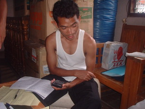

balansi 
/balansi/
v_rt.
“total”
Fr. Eng. balance
v.
for someone (egbalansi, imbalansi/migbalansi, agent, eg><ø-) to calculate a total or balance an account (egbalansiyen, imbalansi/migbalansi, patient, eg><en-)
Egbalansi e pad te utang ku diyè tindaan ni Aning su egbayaran kud kangkuwa.
I will calculate my debt at Aning store because I'm going to pay it later.
Wrd.Gloss: total
Eng. balance; total; calculate
Online dict status: -
Usage level: L
Updated by: RJH,AAA,RUL
Last updated: 22/Oct/2009
This page last updated: 19/May/2012
Copyright © 2009-2010, Matigsalug Language Christian Association, Inc